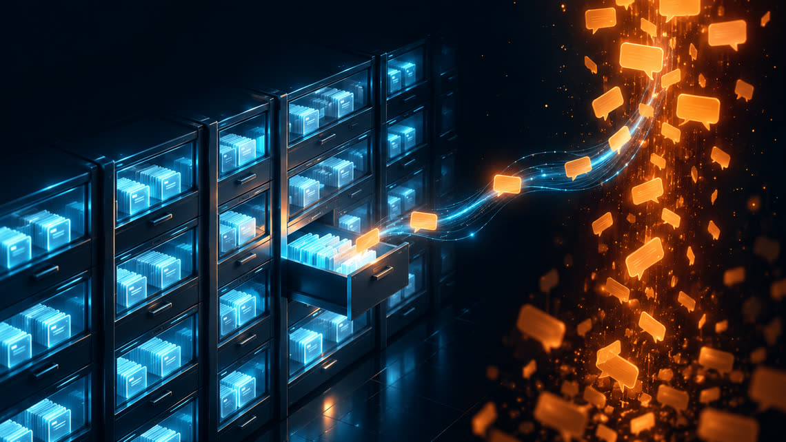

La même question,
tous les trois mois
Dans un groupe Facebook de passionnés, quelqu'un demande comment régler un ralenti instable. Un ancien prend vingt minutes pour répondre, photos à l'appui. Trois mois plus tard, la question revient, presque mot pour mot — et l'ancien retape sa réponse, parce que personne ne retrouve la première, pas même lui. Le savoir d'une communauté ne se perd pas faute d'être écrit. Il se perd faute d'être rangé. Les forums savaient le ranger ; nous avons déménagé là où rien ne se range. Retour d'expérience sur PRV Concept, où le forum, ouvert en 2008, est redevenu la pièce maîtresse.

Un forum classe, un réseau social défile
Sur un forum, une question devient un sujet. Elle reçoit un titre, elle entre dans une rubrique, elle obtient une adresse qui ne changera plus. Celui qui cherchera la même chose dans trois ans la trouvera : par la recherche du forum, par la rubrique, ou par Google.
Sur une page ou dans un groupe, la même question devient une publication. Elle vit trois jours en haut du fil, puis elle s'enfonce. Elle n'a ni titre, ni rubrique, ni adresse que l'on puisse citer. La recherche interne ne la retrouve pas, les moteurs ne l'indexent presque jamais, les assistants d'intelligence artificielle ne la lisent pas.
Le réseau social a gagné parce qu'il est facile : tout le monde y est déjà, on répond depuis son téléphone, personne n'a de compte à créer. Ce sont de bonnes raisons. Mais aucune ne dit où vont les réponses.
Ce que dix-huit ans de classement ont produit
Le forum de PRV Concept, l'association des passionnés du moteur V6 PRV, a dix-huit ans. L'association est présidée par le fondateur de NSY : c'est notre laboratoire, et tout ce qui suit y tourne en production. Le forum compte plus de trois cents rubriques et près de treize millions de caractères de discussions. Des sujets ouverts en 2008 tiennent encore le fil d'une restauration : on y revient, on les complète, on les cite.
Ce classement a une valeur que l'on peut mesurer. Sur quatre-vingt-dix jours, à la fin de l'été 2026, le forum a apporté 63 % des visites venues de Google sur l'ensemble du domaine : 628 clics sur 983, répartis sur 836 pages différentes. Pas une page vedette : des centaines de sujets, chacun répondant à la question précise que quelqu'un, quelque part, vient de taper.
Aucune page Facebook ne produit cela. Non parce qu'on y écrit moins bien, mais parce que rien de ce qu'on y écrit n'a d'adresse.
L'archive s'efface aussi par l'intérieur
Un forum ancien a pourtant sa propre fuite, et elle est silencieuse. Pendant des années, les membres ont illustré leurs messages avec des photos déposées chez des hébergeurs d'images gratuits. Ces hébergeurs ferment, l'un après l'autre.
En août 2026, nous avons compté. 5 205 messages affichaient des images venues d'ailleurs : 29 470 adresses, chez 934 hébergeurs différents. 13 646 étaient déjà perdues. Un seul service, en fermant, en avait emporté 5 400.
Les messages, eux, étaient toujours là : personne ne s'était aperçu de rien. Mais un tutoriel de restauration sans ses photos n'est plus un tutoriel.
Ne pas choisir
Face à cela, deux réflexes. Le premier : abandonner le forum et tout miser sur les réseaux, puisque l'audience y est. Le second : tout migrer vers un outil neuf. Le premier renonce à la mémoire, le second la met en danger — une migration perd toujours quelque chose.
Nous avons fait autre chose : garder le forum comme base, et brancher le reste dessus.
Sauver d'abord. Les images encore vivantes ont été rapatriées sur le serveur de l'association, et les messages repointés vers leur copie : 560 sujets ont retrouvé leurs photos. Les 1 964 miniatures perdues lors d'une ancienne migration ont été régénérées. Et pour que la fuite ne reprenne pas, le forum accepte désormais les photos telles qu'elles sortent d'un téléphone : plus besoin d'hébergeur extérieur.
Brancher les réseaux, dans les deux sens. Chaque nouveau sujet des rubriques publiques est préparé pour la page Facebook et pour Instagram, en carte animée, avec le lien vers le fil, et ne part qu'après validation humaine : les trois premiers départs automatiques avaient relayé du spam, la file d'attente est née ce jour-là. Les petites annonces des membres, elles, ne sortent jamais. Et surtout, le chemin inverse existe : les commentaires laissés sur les réseaux reviennent dans le sujet, recopiés en entier. La décision tient en une phrase, notée le jour où elle a été prise : « ça permettra d'enrichir la base de données du forum avec les infos qui se perdent sur les réseaux sociaux ». Les réseaux restent l'endroit où l'on discute ; le forum redevient l'endroit où l'on retrouve.
Rendre le classement visible. Chaque sujet est déclaré à Google par son adresse définitive, et le site dit aux assistants d'intelligence artificielle où lire. Pour les visiteurs de passage, un aperçu du sujet et une invitation à s'inscrire ; pour les moteurs, le texte entier, déclaré comme contenu réservé selon les règles de Google.
Quand l'archive répond toute seule
Une base classée peut faire ce qu'un fil d'actualité ne fera jamais : répondre.
L'assistant du site — le Père Hervé, chef d'atelier à tête de piston — est branché en direct sur le forum. Quand on lui pose une question d'atelier, il n'invente rien : il cherche dans les fils, cite le sujet qui y répond par son titre exact, et donne le lien. La question qui revenait tous les trois mois trouve sa réponse à toute heure, et l'ancien n'a plus à la retaper.
Il veille aussi sur ce que personne n'a vu. En septembre 2026, le forum comptait 411 sujets restés sans réponse : quelqu'un avait demandé, personne n'avait répondu. L'assistant prépare une réponse quand les archives en contiennent la matière — et rien ne part sans qu'un humain l'ait relue et validée. Sans source, il n'explique rien : il accuse réception, pose une question et appelle ceux qui ont la voiture.
La même matière nourrit le reste : une foire aux questions de 702 entrées, toutes sourcées, et un forum lisible en anglais, titres et rubriques compris, pour les membres venus d'ailleurs.
Ce qu'il faut pour que cela marche
Rien de tout cela n'est magique, et tout ne s'applique pas partout.
- Un hébergement qui sait planifier des tâches. Le pont avec les réseaux, la veille, le sauvetage des images tournent à heure fixe. Sans planificateur, il reste la moitié du dispositif.
- Un accès à la base du forum. C'est elle que l'assistant interroge.
- Un forum à jour, que l'on peut habiller sans modifier son cœur : ses mises à jour de sécurité doivent continuer de s'installer.
- Un abonnement à un modèle de langage, au nom de l'association. Les offres gratuites s'épuisent en cours de mois, et l'assistant se tait.
- Quelqu'un qui valide. La machine prépare, un humain décide.
- Une communauté encore vivante. On sauve une archive ; on ne recrée pas des membres.
Ce qu'on ne migre pas
À la fin du chantier, phpBB est toujours phpBB. Les sujets ont la même adresse, les membres le même compte, et dix-huit ans de messages sont à leur place. Ce qui a changé, c'est que cette mémoire est de nouveau vue, de nouveau alimentée, et qu'elle répond.
Votre communauté a peut-être déménagé sur les réseaux. Sa mémoire, elle, est restée sur le forum. Il n'est pas trop tard pour aller la chercher.
Vous animez un forum et vous vous demandez ce qu'il en reste ? Le questionnaire de faisabilité prend dix minutes, et nous commençons toujours par un état des lieux de l'archive.